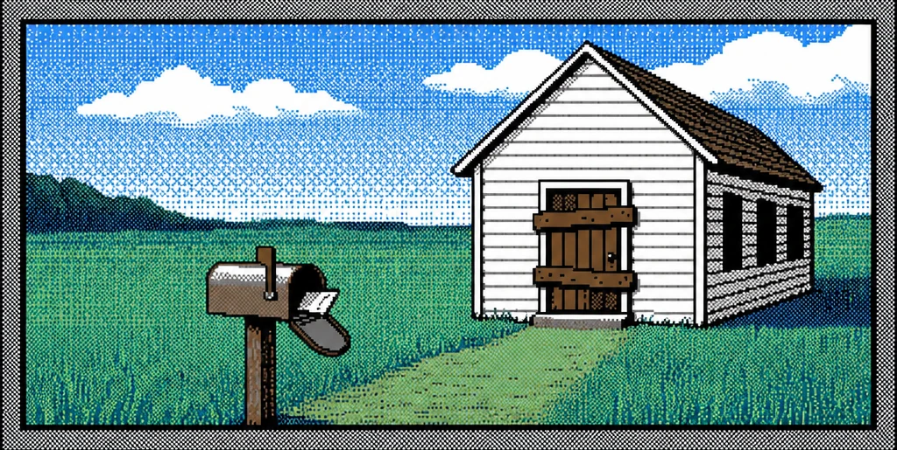
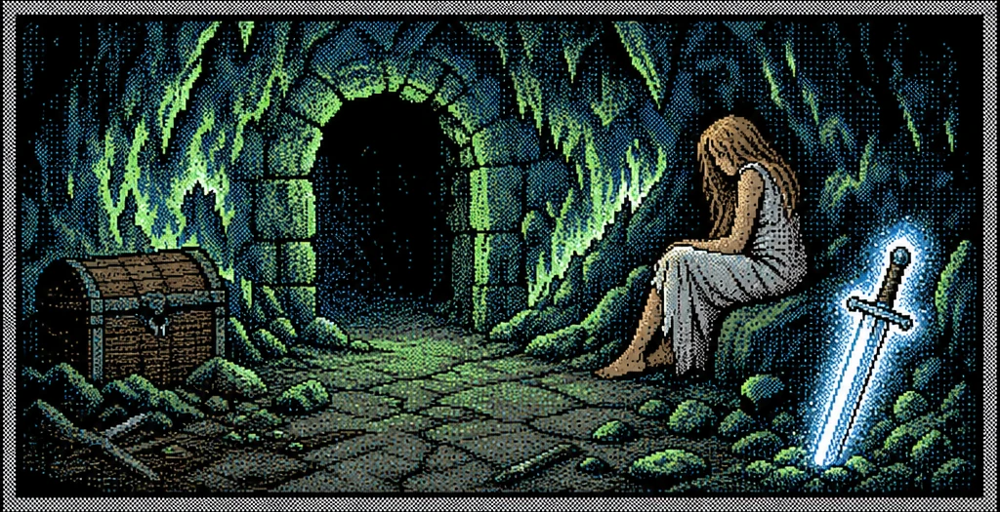
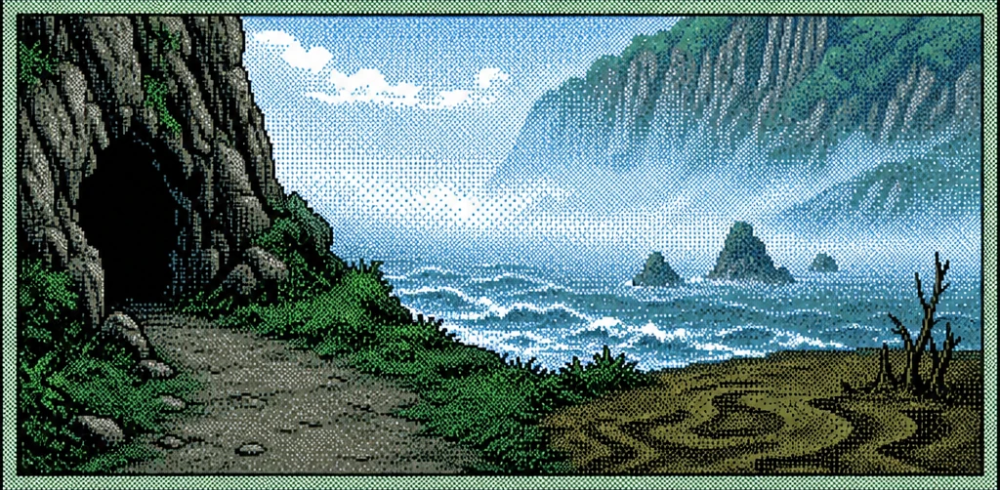
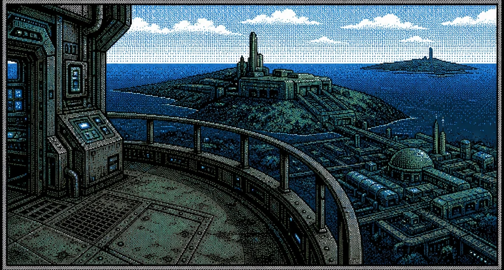
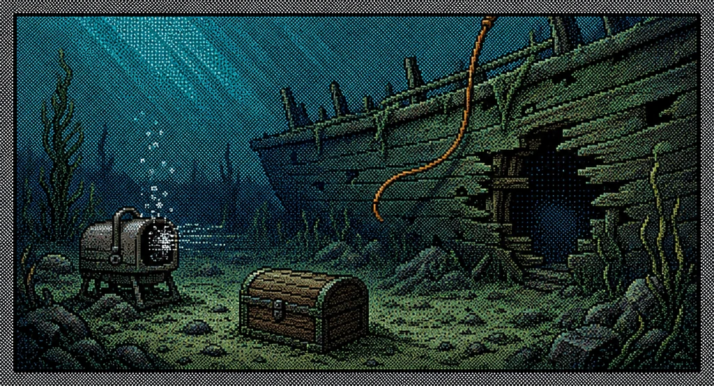

IFWG brings classic Interactive Fiction to life with retro pixel art, pre-rendered or generated on the fly as you play, right in your browser.

You are standing in an open field west of a white house, with a boarded front door. There is a small mailbox here.

You are in the dragon's lair, where the rock walls are scarred by flame. A blackened doorway leads to the south. A rotten old wooden chest is in one corner among the debris.

You are at the shore of an amazing underground sea, the topic of many a legend among adventurers. There is a heavy surf and a breeze is blowing onshore.

This is a balcony girdling the tower. The view is breathtaking; the tower must be half a kilometer tall. From here it is clear that you are on an island.

You are on the murky ocean floor, outside the rotted hull of a shipwreck. You can return to the wreck through the hole in the hull to starboard.
Where classic text-adventure interpreters meet modern image generation.
Browse supported classics in our , or use the Launch Player to load and play your own interactive fiction story files.
Bring your own OpenAI or Google Gemini API key to generate scene art in real time as you play. Games with pre-generated art render immediately, no key required.
Export a complete game package with all its generated graphics, then host it yourself or play it locally. No server required.
Reads each room's description as you play and generates matching retro pixel art in real time.
Bundle a story and all its generated artwork into a single self-contained package you can play anywhere.
Export your games as webRcade feeds and play them in the webRcade player from anywhere.
Everything is open source: audit it, modify it, or host your own copy.
Browse supported classic titles, or launch the player to run your own story files.